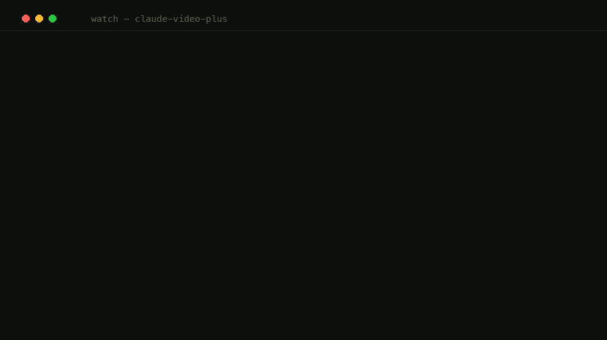

Ask Claude to watch a video
Give Claude Code, Codex, or Cursor a YouTube link or a local file and ask a question. /watch retrieves only the evidence that answers it — so you get the same answer for a fraction of the tokens.

Most tools that let an AI agent "watch" a video feed it the whole thing — dozens of frames plus the full transcript — no matter how small your question is. That is roughly 50,000 tokens on a 40-minute video, every time. claude-video-plus takes a different path: when you ask a question, it retrieves only the parts of the video that answer it.
Install in one command
Claude Code (auto-updates via the plugin marketplace):
/plugin marketplace add abe238/claude-video-plus /plugin install watch@claude-video-plus
Codex, Cursor, GitHub Copilot, Gemini CLI, or any of 50+ Agent Skills hosts:
npx skills add abe238/claude-video-plus -g
Then just talk to it: /watch https://youtu.be/… what did they say about pricing?
How evidence mode works
Instead of sampling the entire timeline, evidence mode reads your question and builds a small, auditable set of evidence:
- Whole topical chapters — from YouTube's own chapter markers, with a pause-gap fallback when there are none.
- A numeric guard that rescues pricing, benchmark, and spec lines from anywhere in the video and grabs a frame at each, because numbers live on screen.
- Deictic frames at chapter starts and "as you can see" moments, where the speaker is pointing at something visual.
- A token budget, so long videos stay cheap.
Every selection lands in a manifest with its timestamp, reason, and score, so you can audit exactly what the model saw and why. It also mines on-screen tables from frames (content nobody reads aloud) and reconciles conflicting claims.
claude-video-plus vs. the original claude-video
This project is a grateful, attributed MIT fork of Brad Bonanno's claude-video, whose caption-first, fail-open design it inherits wholesale. The fork adds one thing: an opt-in evidence mode, measured in a sealed benchmark on five unseen videos.
| On a question | Original claude-video | claude-video-plus (evidence) |
|---|---|---|
| Blind answer quality (1–10) | 8.80 | 8.83 — same |
| Required facts covered | 3.57 | 3.67 — same |
| Tokens sent to the model | 100% | 44% (56% less) |
| Cold end-to-end wall time | 32–34 s | 18–19 s |
When the original is the right choice, it runs automatically. No question, no captions, a local file, a video under 9 minutes, or any internal error, and /watch falls back to the untouched original pipeline. There is no case where you get a worse result than claude-video — evidence mode is pure upside, opt-in per question.
The measured results
The headline numbers come from a sealed, receipt-gated run that can only happen once. On individual targeted questions in development testing, savings ran deeper — one pricing question dropped from 50,941 tokens to 11,505 (−77%) with no loss of quality, and a feature question from 50,941 to 10,555 (−79%) while the answer quality actually went up. Every loss is published, unedited.
All raw data, judge transcripts, and the negative results live in docs/benchmarks/.
Frequently asked questions
Can Claude watch a YouTube video?
Yes. With /watch installed, paste a YouTube URL (or any yt-dlp-supported link, or a local file) and ask a question. It fetches captions, extracts frames with ffmpeg, and answers with cited timestamps.
How do I reduce the token cost of video analysis?
Retrieve instead of reading everything. Evidence mode selects only the chapters, on-screen numbers, and moments that answer your question — 56% fewer tokens than the full-timeline default in a sealed benchmark, at the same answer quality.
Does it work in Codex, Cursor, and other agents?
Yes. It is a portable Agent Skill and installs across Claude Code, Codex, Cursor, GitHub Copilot, Gemini CLI, and 50+ other hosts with npx skills add abe238/claude-video-plus -g.
Does it handle local video files, not just YouTube?
Yes — pass a local path like ~/Movies/screen-recording.mp4. Local files use the original pipeline (evidence mode needs captions to retrieve against).
Is it safe to point an AI agent at untrusted videos?
Only if the tool treats video text as hostile — the description, title, captions, and chapter names are written by whoever uploaded the video, and a malicious uploader can hide instructions or forged trust markers in them. /watch neutralizes every one of those surfaces before the model reads them (loose-matched marker defusing, code-fence defanging, exotic line-terminator normalization). Most video skills don't do this at all. Here is a 30-second fixture you can run against any video tool, including this one.
Is it free?
Yes, MIT-licensed and open source, and it never asks you for an API key. Captions cover most public videos for free. When a video has none, transcription runs on your own machine first: a loopback speech server, YAP on macOS, or the openai-whisper CLI on any platform. Cloud Whisper (Groq or OpenAI) is available but doubly opt-in, and a key alone does nothing without --allow-remote-transcription, so your audio never leaves your machine by accident.